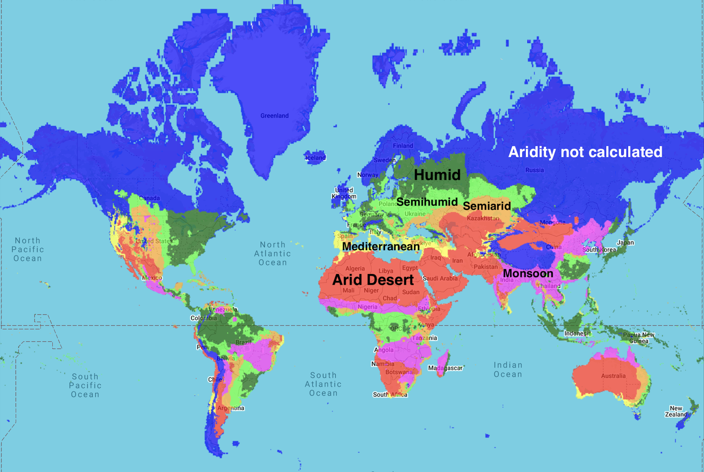

To request a map of any region, country, or state to be added to this webpage (or if you have any questions or comments), feel free to contact me at calebisaacdickinson@gmail.com
Because of significant discrepancies between datasets covering oceans and Antarctica, and the particular difficulties involved in accurately measuring these regions,
we have limited our analysis to land-based (non-Antarctic) data.
Current oceanic and Antarctic datasets lack the accuracy necessary for the standards of this website.
Winter Maps
Global distribution of winter categories — 1961-1990 normals

Global distribution of winter categories — 2025 High Emissions scenario (business as usual)

Global distribution of winter categories — 2100 High Emissions scenario (business as usual)

USA distribution of winter categories — 1961-1990 normals

USA distribution of winter categories — 2025 High Emissions scenario (business as usual)

USA distribution of winter categories — 2100 High Emissions scenario (business as usual)

Aridity Maps
Global distribution of aridity categories — 1961-1990 normals

Global distribution of aridity categories — 2025 High Emissions scenario (business as usual)

Global distribution of aridity categories — 2100 High Emissions scenario (business as usual)

USA distribution of aridity categories — 1961-1990 normals

USA distribution of aridity categories — 2025 High Emissions scenario (business as usual)

USA distribution of aridity categories — 2100 High Emissions scenario (business as usual)

Summer Maps
Global distribution of summer categories — 1961-1990 normals

Global distribution of summer categories — 2025 High Emissions scenario (business as usual)

Global distribution of summer categories — 2100 High Emissions scenario (business as usual)

USA distribution of summer categories — 1961-1990 normals

USA distribution of summer categories — 2025 High Emissions scenario (business as usual)

USA distribution of summer categories — 2100 High Emissions scenario (business as usual)

Africa
Asia
Europe
North America
Canada
Alberta
Alberta — 1961-1990 normals

Alberta — 2025 High Emissions scenario (business as usual)

Alberta — 2100 High Emissions scenario (business as usual)

British Columbia
British Columbia — 1961-1990 normals

British Columbia — 2025 High Emissions scenario (business as usual)

British Columbia — 2100 High Emissions scenario (business as usual)

Manitoba
Manitoba — 1961-1990 normals

Manitoba — 2025 High Emissions scenario (business as usual)

Manitoba — 2100 High Emissions scenario (business as usual)

New Brunswick
New Brunswick — 1961-1990 normals
New Brunswick — 2025 High Emissions scenario (business as usual)

New Brunswick — 2100 High Emissions scenario (business as usual)
Newfoundland and Labrador
Newfoundland and Labrador — 1961-1990 normals

Newfoundland and Labrador — 2025 High Emissions scenario (business as usual)

Newfoundland and Labrador — 2100 High Emissions scenario (business as usual)

Northwest Territories
Northwest Territories — 1961-1990 normals

Northwest Territories — 2025 High Emissions scenario (business as usual)

Northwest Territories — 2100 High Emissions scenario (business as usual)

Nova Scotia
Nova Scotia — 1961-1990 normals

Nova Scotia — 2025 High Emissions scenario (business as usual)
Nova Scotia — 2100 High Emissions scenario (business as usual)
Nunavut
Nunavut — 1961-1990 normals

Nunavut — 2025 High Emissions scenario (business as usual)

Nunavut — 2100 High Emissions scenario (business as usual)

Ontario
Ontario — 1961-1990 normals

Ontario — 2025 High Emissions scenario (business as usual)

Ontario — 2100 High Emissions scenario (business as usual)

Prince Edward Island
Prince Edward Island — 1961-1990 normals

Prince Edward Island — 2025 High Emissions scenario (business as usual)

Prince Edward Island — 2100 High Emissions scenario (business as usual)
Quebec
Quebec — 1961-1990 normals

Quebec — 2025 High Emissions scenario (business as usual)
Quebec — 2100 High Emissions scenario (business as usual)
Saskatchewan
Saskatchewan — 1961-1990 normals

Saskatchewan — 2025 High Emissions scenario (business as usual)

Saskatchewan — 2100 High Emissions scenario (business as usual)

Yukon
Yukon — 1961-1990 normals

Yukon — 2025 High Emissions scenario (business as usual)

Yukon — 2100 High Emissions scenario (business as usual)

United States
Oceania
South America